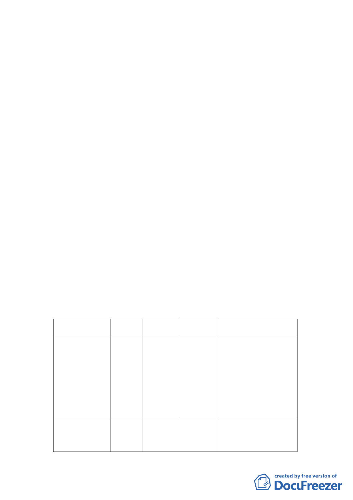

地娛樂設施區及人行步道用地為廣場用地及娛樂設施區暨
修訂信義計畫區 A15、A18、A20 街廓土地使用管制規定計
畫案
案情概要說明：
一、計畫區位置與面積：
本案計畫區為信義計畫區 A15（娛樂設施區）、A18（一般商
業區）、A20（特定業務區）街廓，以及街廓之間人行步道用
地與道路用地，土地為臺北市有，面積共計 19710 平方公尺。
A15 及 A18 街廓現由市府出租予民間經營展覽場（世貿二館）
及停車場使用。A20 街廓現由市府委外經營機車停車場。
二、計畫緣起：
市府為促進信義區市有土地積極利用，擬透過公開招標方
式，辦理 A15、A18、A20 街廓市有土地設定地上權開發，希
望吸引國內外投資進駐。為提高市有土地使用效率，擬在維
持信義計畫區人行路網完整性之原則下，整併部分街廓，以
利街廓整體規劃。爰由市府依都市計畫法第 27 條第 1 項第 3
款規定（為適應國防或經濟發展之需要），辦理本次都市計畫
變更。
三、計畫內容：
（一）使用分區及用地變更
位置
原計畫 新計畫 面積（㎡）
變更理由
信義區信義段
四小段 37-21
地號之南側部
分土地
人行步 娛樂
道用地 設施區
946
為利 A15、A18、A20 街
廓整體規劃，引進零
售、辦公、旅館、觀光
等商業機能，取消 A15、
A18 街廓間之 15 公尺
寬人行步道用地。
信義區信義段四 人 行 步 廣場用地 249
小段 37-21 地號 道用地
為保留信義計畫區人行
路網之完整性，將人行
-3-